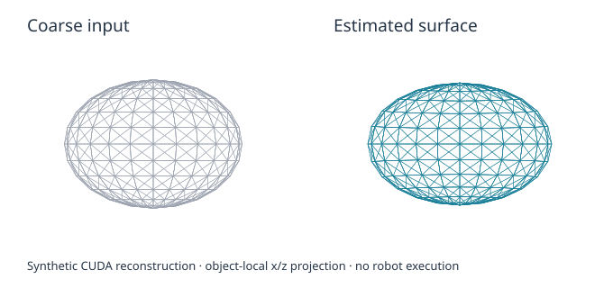

现有演示合集：真实物理抓放、稳定保持与触力校准。字幕指标来自原始记录；展示使用完整时长与原速，仅做亮度调整和排版。研究主线是用操作经验修正物体模型，再把观察用在最影响任务精度的地方。
01 / LEAP 抓取、搬移与释放
最终位置误差3.76 mm
最终角度误差1.94°
抬升保持3.90 s
历史开发参考｜手指载荷超过当前 2 N 界｜不是视频学习或 E3 收益结果
原始录像与来源
原始全程 MP4runs/r4-prerequisites-live-20261103-01/physical-u_handle-110-place-calibrated-01/private-evaluation/actual-execution.mp4
SHA256 6cf3bca768afc6740b6ee9949433d9459bccff2453c5f454db64ffc8fb0ac022
02 / LEAP 抬升与稳定保持
抬升保持7.48 s
最大穿透0.95 mm
抬升期间对向接触100%
历史开发参考｜手指载荷超过当前 2 N 界｜不是视频学习或 E3 收益结果
原始录像与来源
原始全程 MP4runs/r4-prerequisites-live-20261103-01/physical-u_handle-110-07-c01/private-evaluation/actual-execution.mp4
SHA256 b3ce9811629fb2f8dbbe24d7ec80b27046a613e77e032bde5386999c960e54ad
03 / 完整手加载校准
校准试次20 拟合 + 20 验证
局部顺应性下界0.1214 mm/N
证据范围已标定局部手姿
局部传感 / 校准演示｜不代表任意姿态安全，也不代表物体材料标定
原始录像与来源
原始全程 MP4runs/r4-prerequisites-live-20261103-01/full-hand-gravity-40/full-hand-load.mp4
SHA256 82a519f057f5ba1e3d4dd30947837346c32724fa766d4ba311f51966a805117e
04 / 四指触力传感桥
工程检查6 项通过
已检查方向 / 载荷 / 失联
证据范围四个远端指节组件
局部传感 / 校准演示｜不代表任意姿态安全，也不代表物体材料标定
原始录像与来源
原始全程 MP4runs/r4-prerequisites-live-20261103-01/p1-native-fixed/actual-four-pad-execution.mp4
SHA256 0bd2be5101929fa52f0b3c015f6e99b4f5f50393ea0a89a82c049663675e927a
05 / 视频 → 人形动作模仿

原4060机器的历史工程结果：R1 10/10；R2保留4/5、调试3/5。本机仅有静态预览，31秒完整对照尚需从原机器取回。
静态预览，不是本轮新运行或完整视频。
原视频 / 创作者来源
06 / 粗模型 → 联合估计

独立CUDA解析例：平移RMSE 0.0194mm、形状RMSE 0.0260mm。用于说明估计器输入输出。
合成解析数据；没有物理操作，不代表真实视频精度，原例置信度尚未通过。